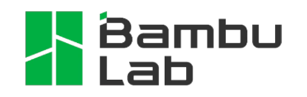

Project Overview
Warning
This project is still ongoing, and this page does not depict its current state. See the Project Status page
DragonFly is an autonomous RC Plane designed for stability and efficiency. It can be manually operated using a Remote Control, or autonomously execute missions defined through an HMI.
Key Features
- Long Range
Tens of kilometers range via RF depending on line of sight
Basically infinite range via 4G
Endurance: about 1 hour
- Autonomy
Waypoint navigation
Autonomous takeoff and landing
- Open source
Everything (code, 3D models…) is available, and you are free to do whatever you want with it (please just don’t turn it into a weapon)

Note
Building your own DragonFly is not a turnkey project, I made it as easy as possible to replicate, but you will still need the following :
- Basic skills in
Linux
3D Printing
Electronics (safety, soldering…)
DIY
Troubleshooting
- Workshop equipment
A 3D printer that can print PETG
A soldering iron
Respiratory protection for carbon fiber dust
Basic workshop equipment (saws, pliers, screwdrivers…)
- Budget
I estimate the total development cost to be around 2000€ (including the 700€ 3D Printer, but not including labor of course). You might be able to recreate it for less than 1000€ if you choose a cheaper 3D printer and buy less useless stuff than me
- Time
I estimate the total build time to be between one and a few months, assuming you can work on it every weekend and have a 3D printer running 24/7.
Technology Stack

{kind=link}
{kind=link}


{kind=link}
{kind=link}
